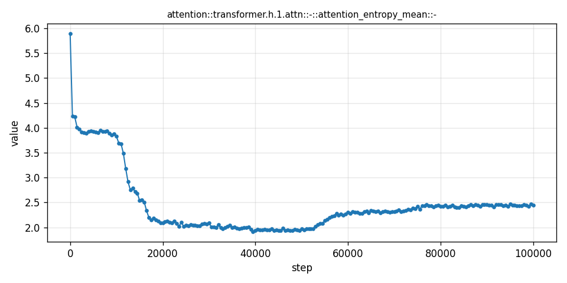
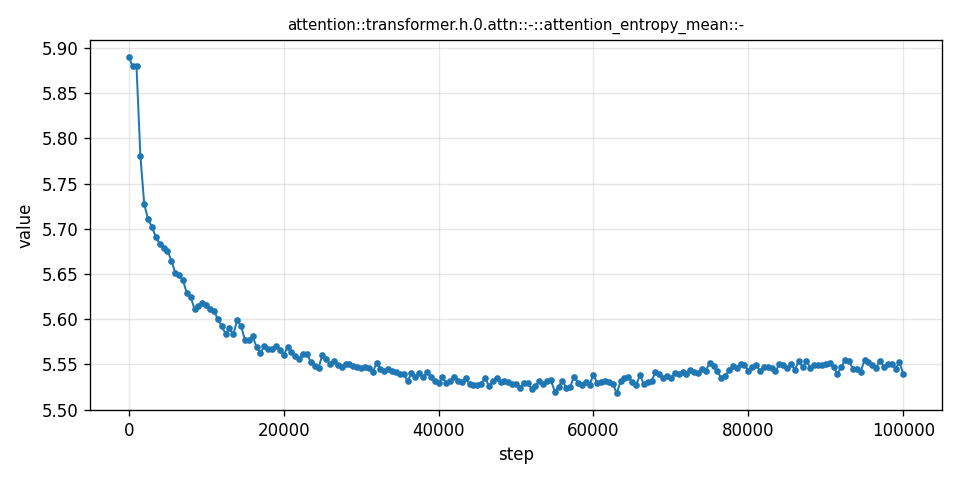
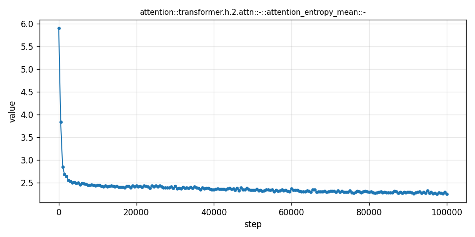
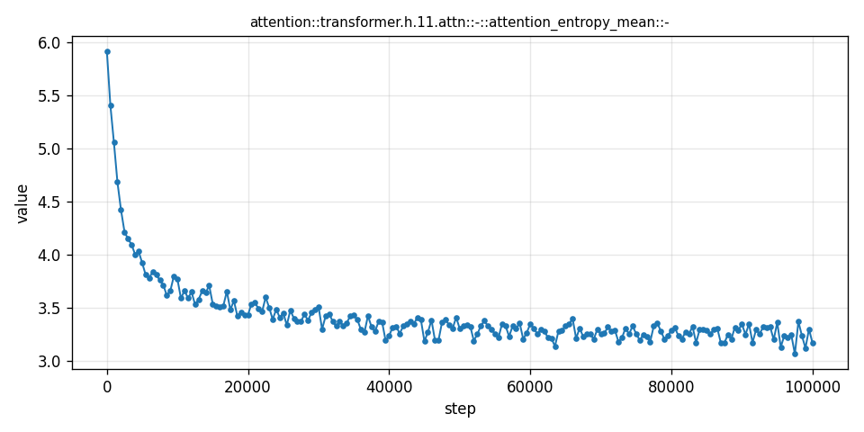
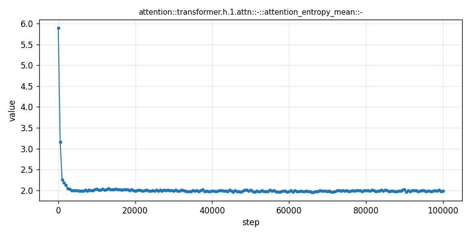
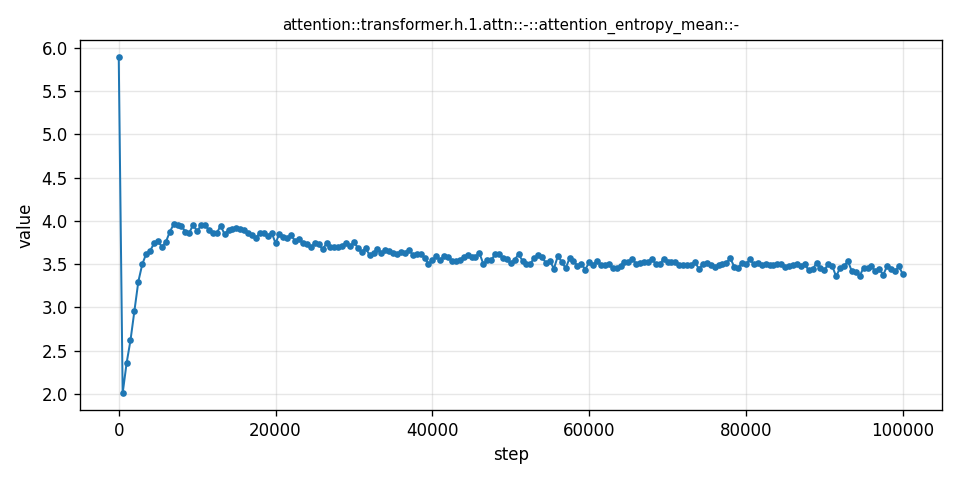

Research note August 2, 2026
One layer,
three regimes.
In the standard 12-layer nanoGPT run, mean attention entropy in Block 1 does not simply decay. It pauses near 4, falls to a second plateau near 2, then rises toward 2.5. No other block follows the same sequence.
Block 1 is zero-indexed: it is the second transformer block.
01 / The observation
A staircase hidden inside training

An early plateau holds from roughly 2k to 10k steps.
A sharp transition settles into a lower regime through about 50k.
The entropy then rises and approaches a third, higher plateau.
02 / Across depth
The other blocks do not take the same path
Neighboring and distant blocks mostly relax toward a single regime. Their levels differ, but the baseline Block 1 staircase is the outlier.



03 / Across setups
The phenomenon depends on the training setup
Hold the observable and Block 1 fixed, then change the setup. The three curves are qualitatively different—not small perturbations of one shared shape.


The question it leaves
Why does Block 1 reorganize in stages?
The curve does not yet tell us the mechanism. It gives us something sharper: two transition windows to investigate, around 10–20k and 50k steps, and a clear test of any explanation—the same mechanism must also account for why the pattern disappears when depth or warmup changes.
Explore the full curve